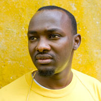

Adam
Adam is from Darfur, where violent raids on civilians seen as supporting the Darfuri rebel have increased dramatically in the last three years. Many of his people are in refugee camps in Chad, or displace in Darfur. Battles there are ongoing between the goverment and the rebels.
Chat with Adam →